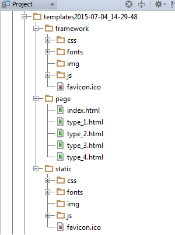

Für HTML-Vorlagen gelten die folgenden Regeln:
Das Frontend für Baukasten und Kundenprojekt sind streng getrennt, daher gibt es für den Baukasten und das Kundenprojekt auch getrennte static Verzeichnisse:
Im static Verzeichnis für den Baukasten gibt es zwei verschiedene Ordner für Bilder. Alle Dateien, die unter 'img' werden im Bundle Export erfasst, Bilder in 'fwimg' sind nur für die lokale Entwicklung gedacht.
Die Konkatination von JavaScript Modulen und das Kompilieren von LESS-Dateien erfolgt über Grunt
In der Grunt Konsole von IntelliJ können die folgenden Alias Tasks verwendet werden:
Auf der Vorlagenübersicht befindet sich der Button
Nach Auslösen des Buttons werden automatisch alle konfigurierten HTML-Vorlagen inklusive der statischen Dateien als statischs HTML im Ordner 'frontend_fw\export' abgelegt.
Jeder Export erhält einen eigenen Ordner 'templates[Zeitstempel des Exports]'
Die Ordnerstruktur ist die folgende:
Die Konfiguration erfolgt in 'frontend_fw\core\templatesettings.py'
Der Export Prozess erfasst standardmäßig alle im Templateordner 'page' vorhandenen Vorlagen, mittels BUILD_PAGE_EXCLUDED können Ausnahmen definiert werden.
Vorsicht! BUILD_PAGE_EXCLUDED bezieht sich nur auf den Kopierprozess, nicht auf die Templateübersichtsseite
Um die Templateübersicht so flexibel wie möglich zu gestalten (Mehrfachnennung einer Vorlage in mehreren Abschnitten, Nichterfassen einer exportierten Vorlage...) wurden die Export und Übersicht entkoppelt. Der Frontendentwickler muss selbst darauf achten, dass in der Übersicht keine in BUILD_PAGE_EXCLUDED aufgeführten Vorlagen verlinkt sind.
{% endblock %}